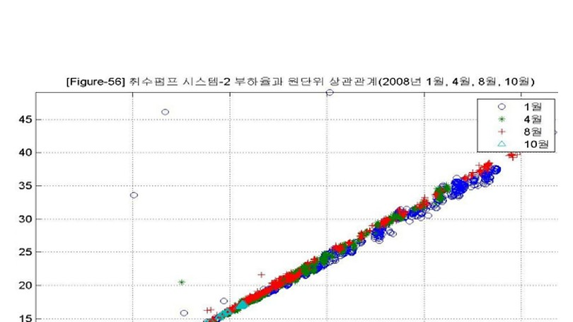

CHAPTER 18 SYNTHESIS
그림 18-2. 다른 펌프시스템의 유량-소비동력 상관관계 예시. [S09] 2010 대형 송수펌프 운전특 성 분석자료를 비식별 형태로 복원. CONSULTANT’S POINT | 첫 방문에서 절감률을 확정하기보다 어떤 데이터와 Baseline 으로 실제 절감성과를 검증할지 먼저 합의하면 프로젝트의 측정·운영 기준이 명확해진다. CHAPTER 18 SYNTHESIS Case 26 은 설비교체의 성능효과를 UPI 로 분리해 검증한다. Case 27 은 동일 수요를 여러 펌프 조합으로 공급할 때 고효율 영역·가동대수· 배수지 수위를 통합 최적화한다. CHAPTER 18 REVIEW 같은 유량·양정조건에서 펌프별 UPI 를 비교한다. 설비교체 효과와 운전최적화 효과를 구분한다. 가동대수·수위·Peak 관리까지 포함해 펌프시스템 전체를 최적화한다.

인쇄본 기준 p. 86